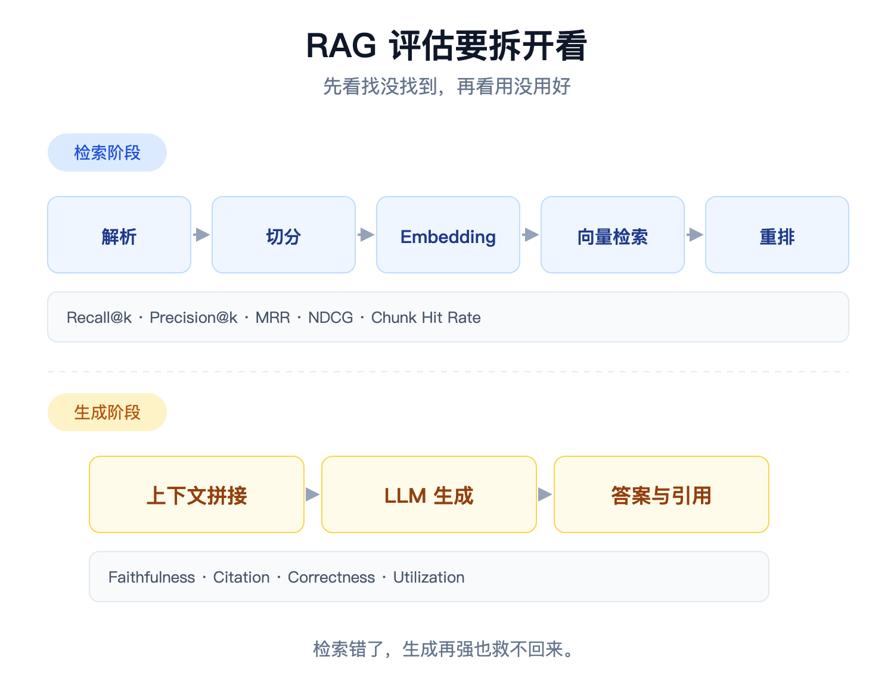
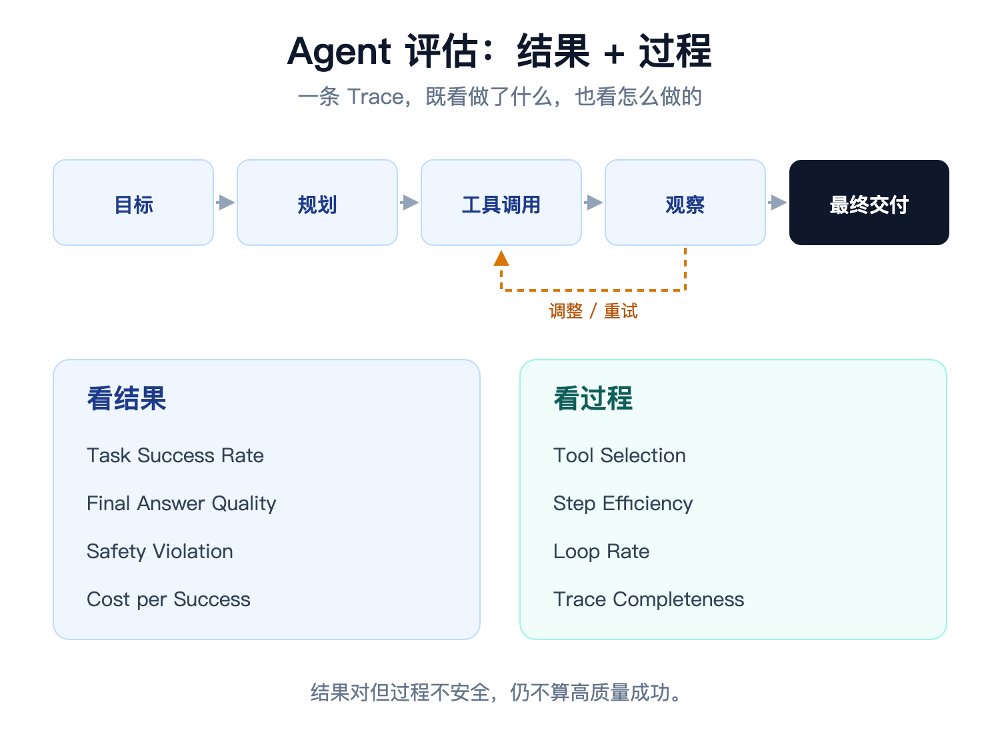

从检索、生成到 Trace，定位到底哪一环坏了
RAG 和 Agent 是企业落地中最典型的两种形态，也是最容易被“一个端到端准确率”掩盖问题的场景。
答案错了，可能是检索没找到、排序太靠后、上下文被忽略，也可能是模型没按资料回答。
不拆链路，优化就只能靠猜。
一条典型的 RAG 链路有七个环节：
解析 → 切分 → Embedding → 检索
→ 重排 → 拼接 → 生成每个环节都会失败，而且会往下游传播：
| 环节 | 典型失败 | 后果 |
|---|---|---|
| 解析 | 表格错行、OCR 错误 | 检索到也是错的 |
| 切分 | 切断定义、块过大 | 片段缺少关键上下文 |
| Embedding | 领域词表示差 | 相近文档召不回 |
| 检索 | Top-K 太小、索引过期 | 正确文档不在候选集 |
| 重排 | 正确文档被排后 | 上下文里没有有用内容 |
| 拼接 | 超长截断、顺序乱 | 关键信息被淹没 |
| 生成 | 忽略上下文、引用错 | 答案不忠实 |
拆分的价值是归因。
如果 Faithfulness 从 0.92 掉到 0.84，而 Recall@5 没变，问题大概率在生成或 Prompt。
如果 Recall@5 也掉了，优先查索引、Embedding 和过滤条件。

图 5：RAG 拆成检索与生成两段，分别评估。
检索评估需要带“相关文档或证据片段”标注的测试集。
| 指标 | 怎么算 | 注意 |
|---|---|---|
| Recall@k | 命中相关数 / 全部相关数 | 多文档问题必看 |
| Precision@k | 前 k 个中相关数 / k | k 越大越易稀释 |
| MRR | 第一个相关结果的排名倒数 | 只看第一个相关结果 |
| NDCG@k | DCG / IDCG | 需要分级相关性标签 |
| Context Relevance | 召回内容与问题的相关度 | 相关不等于有答案 |
| Chunk Hit Rate | 答案 chunk 是否进前 k | 比文档级 Recall 严格 |
| Source Coverage | 应引用来源覆盖比例 | 适合多文档、多跳 |
几个公式：
MRR = mean(1 / rank_first_relevant)
DCG@k = sum(rel_i / log2(i+1))
NDCG@k = DCG@k / IDCG@k指标怎么选：
一个常见陷阱：只标了文档 ID，却用 Chunk Hit Rate 评估。
文档相关，不代表切出来的 chunk 包含答案。要标到 chunk 或证据片段，否则指标会虚高。
| 指标 | 衡量什么 | 注意 |
|---|---|---|
| Answer Correctness | 最终答案是否正确 | 允许多种等价表达 |
| Faithfulness | 是否由上下文支持 | RAG 的核心指标 |
| Citation Accuracy | 引用是否支撑结论 | 存在不等于支撑 |
| Context Utilization | 有用证据是否被使用 | 区分没找到和没用上 |
| Refusal Accuracy | 该拒就拒、该答就答 | 两类错误要分开看 |
拒答能力建议用 2×2 矩阵：
| 系统行为 | 应回答 | 应拒答 |
|---|---|---|
| 回答 | 正确回答 TP | 错误硬答 FP |
| 拒答 | 错误拒答 FN | 正确拒答 TN |
三个口径：
只报综合准确率不够。高风险场景里，FP 的代价远高于 FN。
“应拒答却硬答”应该单列为高危错误，单独设门槛。
| 现象 | 先查什么 | 处理方向 |
|---|---|---|
| 检索不到 | 文档是否在索引、Recall | 修解析、切分、索引 |
| 排序靠后 | MRR、NDCG、实际排名 | 加重排、混合检索 |
| 上下文被忽略 | 位置扰动测试 | 压缩上下文、关键证据前置 |
| 不忠实 | Faithfulness、无依据 claim | 强化引用、换模型 |
| 引用不准 | 引用与结论是否对应 | 用 chunk id、后置校验 |
| 知识过期 | 文档更新与索引同步 | 建更新流水线、标生效日期 |
| 多跳只答一半 | Source Coverage | 查询分解、多轮检索 |
| 正确但无引用 | 无引用答案比例 | 强制引用字段 |
诊断顺序建议：
文档在不在索引 → 排名够不够前 → 上下文有没有证据 → 生成是否忠实
不要一上来就换模型。多数 RAG 问题在数据和检索，不在生成模型。
RAG 评估集比普通 QA 多两类信息：证据位置和拒答预期。
| 字段 | 作用 | 示例 |
|---|---|---|
| question | 真实问法 | 试用期年假怎么算 |
| expected_answer | 标准答案要点 | 按在职月份折算 |
| acceptable_answers | 允许的等价表达 | 按入职月数比例算 |
| reference_docs | 应引用文档 | HR-POLICY-2026 |
| evidence_spans | 支撑答案的原文 | 每满一个月折算 1/12 |
| must_include | 必须出现 | 按月份折算 |
| must_not_include | 绝不能出现 | 试用期没有年假 |
| reject_expected | 是否应拒答 | true / false |
| difficulty | 难度 | easy / hard |
| business_tag | 业务标签 | 入职咨询 |
样本设计要覆盖：
只构造“能答出来的问题”，会系统性高估系统能力。
普通 LLM 评估一个输入到输出的映射。
Agent 评估一条轨迹：
目标 → 规划 → 选工具 → 生成参数
→ 执行 → 观察 → 调整 → 终止每一环都可能出错：
| 环节 | 评估问题 | 失败后果 |
|---|---|---|
| 规划 | 计划是否覆盖目标 | 方向错，后面全错 |
| 选工具 | 是否选对工具 | 白跑、查错数据 |
| 参数 | 是否合法、完整 | 报错、空结果、误操作 |
| 多步执行 | 状态和依赖是否正确 | 用过期结果、顺序错 |
| 错误恢复 | 失败后能否改路线 | 卡死、死循环 |
| 终止 | 是否知道何时停 | 过度执行、提前结束 |
| 交付 | 是否完整、可审计 | 用户无法使用 |
关键原则：Agent 的成功必须由外部状态验证，不能由模型自己说“我完成了”。
“已创建工单”要以工单 ID 为准，“已发邮件”要以回执为准。
| 指标 | 衡量什么 | 注意 |
|---|---|---|
| Task Success Rate | 任务是否真正完成 | 用外部状态判定 |
| Plan Quality | 计划是否合理完整 | 合理不等于成功 |
| Tool Selection Accuracy | 工具是否选对 | 需要期望序列或 Judge |
| Tool Call Success Rate | 调用是否成功 | 参数、接口、解析都算 |
| Step Efficiency | 步数是否合理 | 别为省步数牺牲正确 |
| Error Recovery Rate | 出错后是否恢复 | 要定义什么叫恢复 |
| Loop Rate | 是否无效循环 | 按重复动作检测 |
| Safety Violation Rate | 是否越权违规 | 高危应零容忍 |
| Trace Completeness | 轨迹是否可审计 | 必填字段完整率 |
| Final Answer Quality | 最终交付质量 | 过程不安全仍不通过 |
再补四个成本类指标：
一个最小 Trace 长这样：
{
"step": 1,
"tool": "order.query",
"args": {"order_id": "A10086"},
"observation": {"status": "paid"},
"latency_ms": 320,
"error": null
}
图 6：Agent 既看最终结果，也看执行过程。
基于 Trace 可以检查：
| 维度 | 检查什么 | 方法 |
|---|---|---|
| 步骤合理性 | 每步是否服务目标 | 人工或 Judge |
| 工具必要性 | 是否有冗余调用 | 对照参考路径 |
| 参数正确性 | 是否合法、语义正确 | 规则 + 业务比对 |
| 观察利用 | 结果是否被正确使用 | 看后续步骤引用 |
| 循环 | 是否重复相同动作 | 规则 + 相似度 |
| 关键步骤 | 是否跳过校验、确认 | 流程检查清单 |
| 安全边界 | 是否越权、碰敏感数据 | 权限日志 + 红队 |
评估方法组合：
可审计的成功，比偶然的成功更有价值。
最终答案对，但过程跳过校验、用了过期数据、调了越权工具，这次执行不应算高质量成功。
| 难点 | 表现 | 缓解 |
|---|---|---|
| 路径不唯一 | 正确路径被判错 | 评目标达成，不强制路径 |
| 中间对最终错 | 每步合理但结果不完整 | 过程 + 结果一起看 |
| 结果对过程险 | 答案对但越权 | 安全指标一票否决 |
| 环境不可复现 | 昨天成功今天失败 | 固定环境快照、Mock |
| 多 Agent 难归因 | 整体失败不知谁的错 | 记录跨 Agent 消息 |
| 成功标准模糊 | “写方案”算不算完成 | 预先定义验收清单 |
还有一个常见问题：成本与步数膨胀。
Agent 倾向多调用、多验证，成功率略升，成本可能翻几倍。
所以要用 Cost per Success 和 Step Efficiency 约束，并设预算上限。
数据来源优先级：真实数据 > 专家整理 > 合成数据。
| 来源 | 价值 | 注意 |
|---|---|---|
| 用户问题 | 最接近真实分布 | 脱敏、去噪 |
| 客服工单 | 有真实失败场景 | 需提炼标准结论 |
| 搜索日志 | 真实表达和需求 | 缺上下文和答案 |
| 产品文档 | 权威知识、可标证据 | 可能过期、版本多 |
| 专家出题 | 覆盖高风险边界 | 可能偏离真实问法 |
| 线上失败 | 最有价值的回归样本 | 脱敏、根因分析 |
| 安全红队 | 覆盖越狱、注入、隐私 | 需专门设计 |
| 业务边界 | 测试澄清、拒答、转人工 | 标准需产品参与 |
样本要显式覆盖：
数据集要分层管理：
| 数据集 | 用途 | 是否门禁 |
|---|---|---|
| 开发集 | 日常调试 | 否 |
| 回归集 | 防退化 | 软门禁 |
| 门禁集 | 发布验收 | 硬门禁 |
| 安全集 | 越狱、注入、隐私 | 一票否决 |
| 长尾集 | 低频边界 | 视业务 |
| 线上抽样 | 监测分布漂移 | 否 |
维护动作：
没有回流的评估集，半年后就会变成历史资料，而不是质量防线。
RAG 和 Agent 的评估，核心都是四个字：拆开、归因。
下一篇讲工程化：平台怎么搭、伪代码怎么写、Judge 模板怎么设计、报告怎么写、门禁怎么接。
下一篇：把评估接进研发流程。
以下文献是本文方法与观点的主要来源，也可作为延伸阅读；未在正文中逐条标注引用。为便于公众号阅读，仅保留作者、标题、发表信息与 arXiv 编号，未附外链。